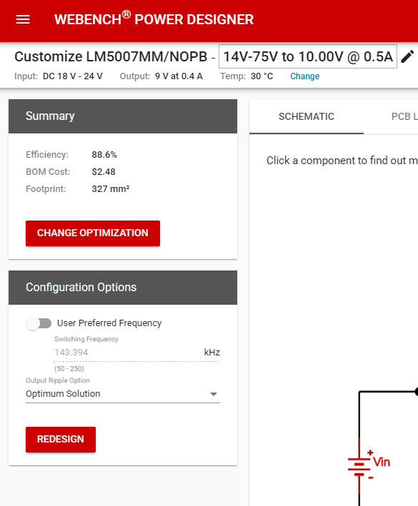

An IoT hardware upgrade adding dynamic fan control, wireless connectivity, and custom web management.
After purchasing a budget Telefunken projector, I identified several hardware limitations that impacted usability—primarily excessive fan noise and a weak infrared remote that required close proximity to the receiver. To solve these pain points and introduce smart home integration, I implemented the following upgrades:
The sections below document the end-to-end design process of the control module, from schematic design and custom PCB layout to the final user interface.
The Power stage of this design was separated into three stages
to power the Cooling fan
to drive the opto couplers
to power the ESP32 chip
The first two stages are based around the LM5007 Switching regulator from Texas instruments ,in order to get the basic circuits for each stage ,the WEBENCH Power designer web application was used to get the basic circuits for each and then from there , the circuits were optimised to get the best results and stability.

This stage was designed to take in input voltage of 18-24 V and output a voltage of 9V 400mA, this was the required voltage where the cooling fan ran with minimum noise